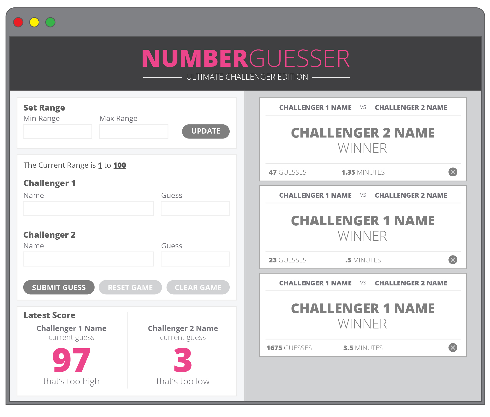

Number Guesser
Math game using a random number generator for 2 people
IdeaBox

Note taking app, utilizing Local Storage
Check Yo Self
To-do list app, utilizing Local Storage
Math game using a random number generator for 2 people
Note taking app, utilizing Local Storage
To-do list app, utilizing Local Storage